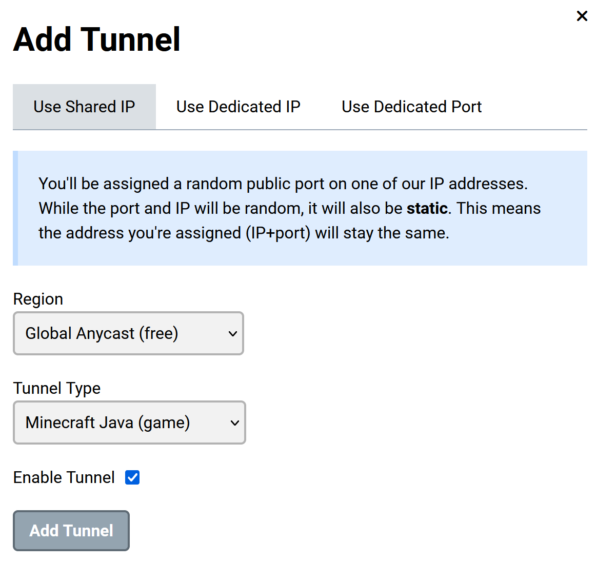
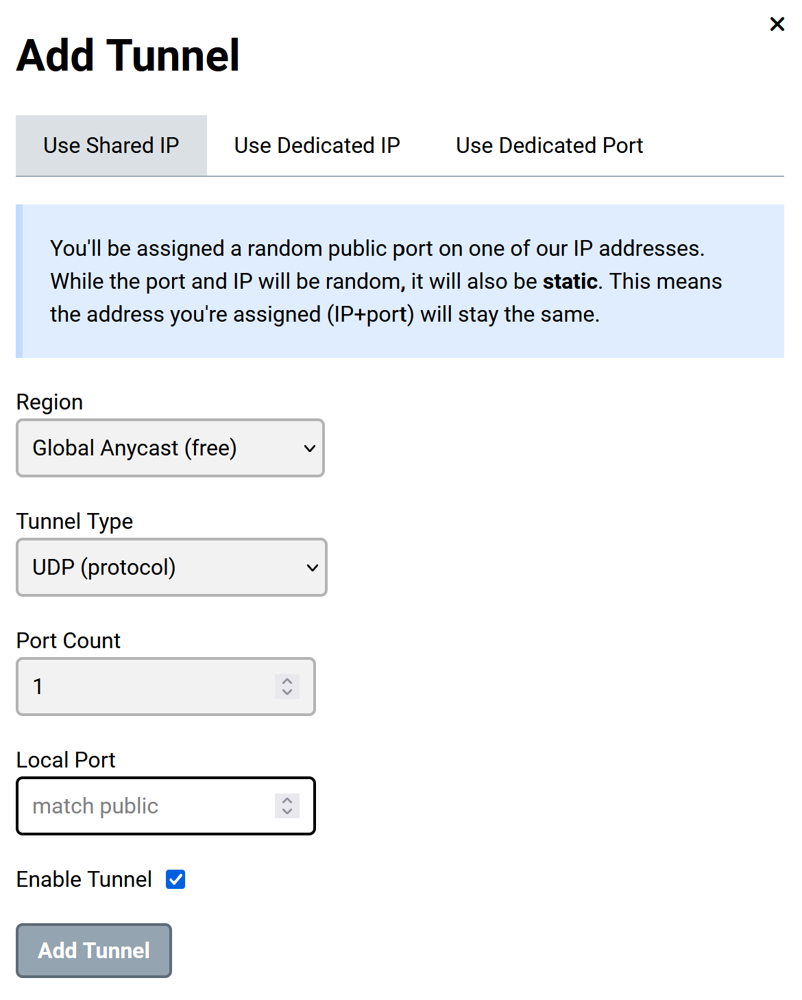
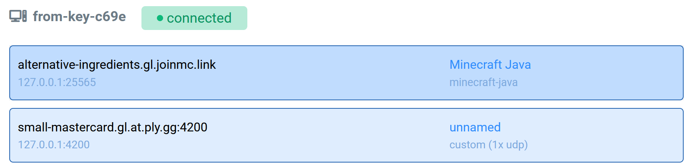

Playit.gg is a new (at time of writing) service for securely hosting web servers behind a firewall without port forwarding. It's like ngrok, but it is focused on gaming and so offers both better latency and unique features, like the ability to have multiple tunnels open at once.
Below are the steps for using the Simple Voice Chat mod with playit.gg. If you already have a server with the mod installed, you can skip to step 3.
-
Install the Fabric Loader
Download the JAR from fabricmc.net/use/installer, then launch it and move to the Server tab. Then set the dialog how you want it. You do not need to download the server jar yet, Fabric can download it for you.
-
Install the Simple Voice Chat Mod
Download the one that matches your Minecraft version at curseforge.com/minecraft/mc-mods/simple-voice-chat/files. Then go to your server directory and place the jar file in themodsfolder. If the folder does not exist, create it.
Your server folder should now look like this:
-
Download and launch the playit.gg program
Download the binary for your platform at playit.gg/download. Place it inside your server folder.
The playit.gg binary is a command-line tool. Use your system's terminal to add executable permissions if necessary, then run it from your terminal.
It will also open a browser window if you do not already have an account logged in. If a browser does not open, go to playit.gg/account/tunnels in your browser. -
Create the Primary Playit Tunnel
The first tunnel is easy to create. Just press the Minecraft Java button and follow the on-screen instructions.

You'll then see the tunnel appear under Your Tunnels.
-
Create the Secondary Playit Tunnel
The second tunnel requires some more configuration. Select theCustomoption and type any number for the port range, and setprotocoltoudp. Leave thePortblank.

You should then see both tunnels listed under Your Tunnels.
After this, select the custom UDP tunnel and scroll to the bottom. Copy thePortfrom the table.
-
Launch the Minecraft server
Create a script to launch the game. An example command to run isjava -Xmx4G -jar fabric-server-launch.jar noguiMake sure to agree to the EULA if prompted. Then wait for the server to finish generating a world, after which run thestopcommand in the console and wait for it to shut down. This will create the necessary files for the next step.
Your filesystem should now look like this:
-
Configure the Voice Server
Since the Voice Chat Mod is not yet aware of playit.gg, joining the playit address for the Minecraft server at this stage will not give functioning voice chat.
Open theconfig/voicechat/voicechat-server.propertiesand edit two properties:-
voice_host- set this to thetunnel addressof your Custom UDP Playit tunnel, without the port. -
port- set this to the port of your playit tunnel.

-
-
Play!
In order for this to work, you must have the minecraft server and the playit executable running at the same time. Open two terminals and execute your server's startup script and the playit executable. You should see the line[VoiceChatServerThread/INFO]: Server started at port 38429, where the port matches the one you set in the properties file. Then, paste thetunnel addressof the Minecraft Java tunnel into Minecraft's Direct Connect box.

If all goes well, you should be able to press thevkey on your keyboard to configure in-game voice settings!
Happy crafting!